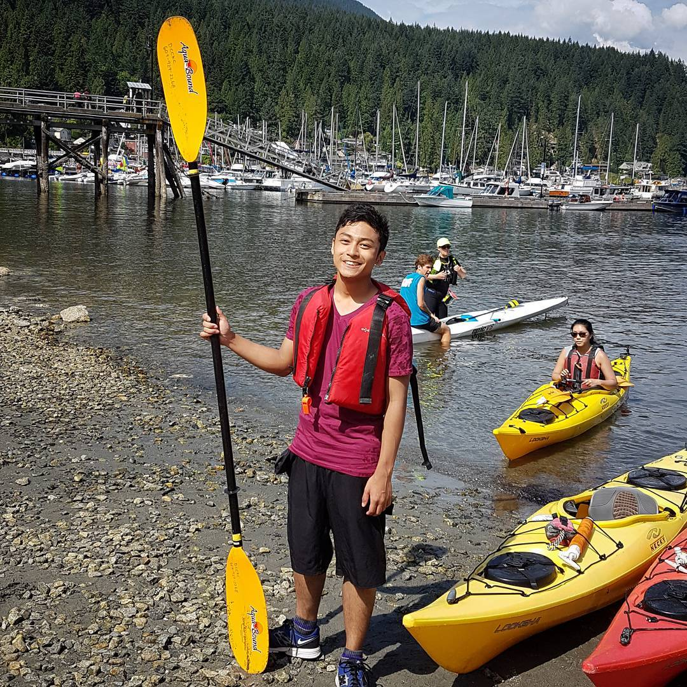

This is my digital portfolio. Here you have access to my LinkedIn, GitHub Page, Contacts, etc. This digital Resume is also my first independent endeavor outside of my online WebDev Classes and Assignments. It's only made up of HTML and CSS for now. There is some Javascript and JQuery but minimal. It is hosted through Github. Bootstrap 3.3.7 is also utilized. As for now, I do not see a need to add backend features for no requests or posts are present. This Is the first prototype, more versions will built upon this basic website foundation.
I am third year Computer Science Student here at the University of Victoria, BC, Canada. I am from Malaysia but I've never lived there since the young age of 4. I've lived in many different Countries and have a third-culture mindset. I like travelling and learning new things. Professionally, I'd hope to pursuit and be successful in my Major, Web-Dev, App, and the Software Industry.